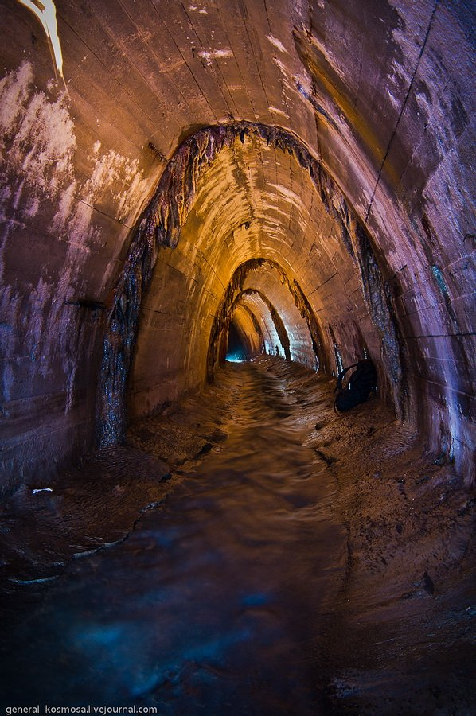

Ярослав Чемеринський
Директор
Моб. тел.: +38 067 674 24 99
Роб. тел.: + 38 032 295 84 62
Email: yarislav.chemerynskiyi@denobs.com.ua
79014 м. Львів
вул. Мучна 23, офіс 4
Email: office@denova.сom.ua
Website: denovs.com.ua
Як відомо, нещодавно у Львівський області відкрито нове родовище природного газу – Крехівське. Це родовище знаходиться у Жидачівському районі, поблизу також експлуатують Дашавське, Любешівське і Тейсаровське газові родовища. За попередніми оцінками експертів, родовище може містити близько 150 млн. кубометрів газу. У найближчій перспективі це дозволить експлуатувати родовище щонайменше 10-ти років. Але на цьому видобуток "львівського" газу не зупиниться. До кінця року інвестори планують пробурити тутще дві свердловини, а у 2016 році до програми збільшення видобутку природного газу у регіоні долучать газоносні площі, які знаходяться і в Івано-Франківській області.
Як відомо, нещодавно у Львівський області відкрито нове родовище природного газу – Крехівське. Це родовище знаходиться у Жидачівському районі, поблизу також експлуатують Дашавське, Любешівське і Тейсаровське газові родовища. За попередніми оцінками експертів, родовище може містити близько 150 млн. кубометрів газу. У найближчій перспективі це дозволить експлуатувати родовище щонайменше 10-ти років. Але на цьому видобуток "львівського" газу не зупиниться. До кінця року інвестори планують пробурити тутще дві свердловини, а у 2016 році до програми збільшення видобутку природного газу у регіоні долучать газоносні площі, які знаходяться і в Івано-Франківській області.
Останнім часом, у Львові спостерігається проблема неприємного запаху від каналізаційних стоків. За словами головного технолога міста Миколи Одуха, основною причиною є досить висока температура каналізаційних стоків, що призводить до утворення випарів. Для зменшення цього неприємного запаху необхідно повністю реконструювати систему вентиляції колекторів та придбати спеціальне обладнання для очищення каналізації. Але, як варіант, можна налагодити і відбір тепла із випарів.
Завдяки технічним рішенням компанії «Денова», відтепер стало можливим вторинне використання тепла, яке віддає місто, для забезпечення опалення адміністративних будівель Львова без руйнації існуючих мереж та прокладання нових. При цьому ціни на використання цього джерела енергії, на відміну від традиційних, є значно дешевшими і більш вигідними.
Практика максимального (подекуди і безвідхідного) використання залишків будь-якого типу, вже давно втілена у життя у багатьох країнах зарубіжжя: сміттєпереробні заводи, використання теплових ресурсів різних систем, залучення альтернативних видів енергії тощо. А безвідповідальне використання ресурсів, яке, на жаль, має місце у нашій країні значно здорожує рівень життя кожного громадянина. Тож втілення в життя схожих ініціатив допомогло б зекономити кошти та оптимізувати негативний вплив на середовище. А також сприяло б переходу країни на якісно новий рівень енергетичної незалежності, яка в наш час є вкрай важливою.
Контактна інформація:
Телефон: +123456789
Email: info@example.com